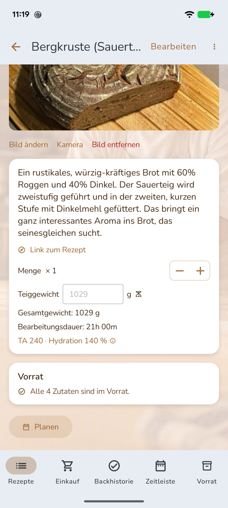
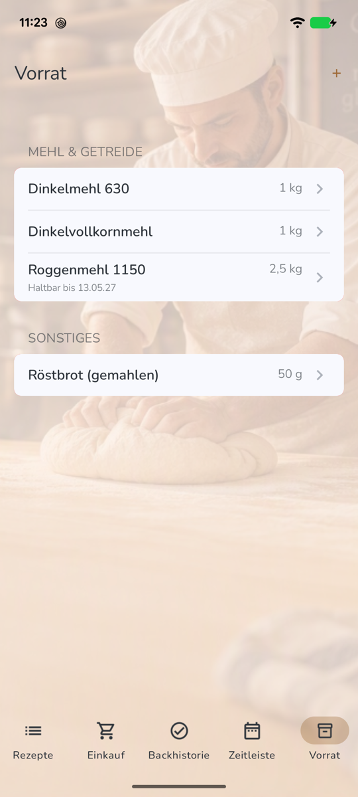

Contents
- What BakePlanner does
- Requirements
- Basic terms
- The tabs
- Recipe database
- My recipes
- Planning, bake mode and reminders
- Creating and editing a recipe
- Timeline and baking day
- Baking history
- Shopping lists
- Pantry
- Calculators
- Settings
- Units and amounts
- Data, backup and changing devices
- Privacy
- BakePlanner Pro
- Frequently asked questions
- What only the iPhone has
1. What BakePlanner does
BakePlanner is a baking planner for bread, rolls and pastries. What sets it apart from a plain recipe collection is that it does the scheduling for you:
- A recipe consists not only of ingredients but of processing steps with durations.
- From those durations the app works out the start time of every single step.
- You can plan backwards: "The bread should be ready at 6 pm" – the app tells you when to mix the sourdough.
- Every step gets a reminder as an Android notification, including the automatically added steps "Turn on the oven" and "Baking is finished".
On top of that: a shared public recipe database, your own recipes on the device, import from photos, web pages and text, shopping lists sorted by aisle, a pantry, a baking history with photos, measurements and statistics, a starter diary with a ripening estimate, recipe variants with a comparison, a bake mode that reads aloud, and four baker's calculators.
Free, and BakePlanner Pro. The core of the app is free: recipes, planning with reminders, bake mode with read aloud, baking history, the recipe database, the calculators and the backup. Some further features – such as shopping lists, the pantry, the baking day and oven profiles – are part of BakePlanner Pro, a one-time purchase through Google Play with no subscription (see chapter 18).
Quick start: your first baking plan in five steps
- Pick a recipe in the Recipes tab – or create your own with + at the top right.
- On the recipe page, tap Plan.
- Choose Start from or Done by and set the date and start time.
- Check the calculated times and tap Plan at the top right.
- Open the Timeline tab to see all steps as a timeline or a list.
The first time you plan, Android asks whether BakePlanner may send notifications. Without that permission the plan is still saved, but no reminders arrive (see chapter 7).
2. Requirements
| Item | Value |
|---|---|
| Android | 9.0 or later; an app language separate from the system language from Android 13 |
| Source | Google Play (currently as a closed test) |
| Cost | Free; BakePlanner Pro as a one-time in-app purchase through Google Play (see chapter 18) |
| Size | About 55–60 MB download, about 190 MB installed – the app brings its own runtime |
| Languages | German, English, French |
| Appearance | Light and dark mode following the system setting, font size following Android's "Font size" setting |
| Permissions | Notifications (reminders), camera (recipe pictures, baking photos, import from photos), internet (recipe database, cloud AI, import from web pages) |
| Internet | Only for the recipe database, the cloud AI and the import from web pages. Your own recipes, planning and reminders work offline. |
| Sign-in | Not needed. Signing in with Apple is optional – you need it only to publish recipes (see chapter 14). |
Important: all your own data lives on this device only. There is no sync and no automatic backup to Google Drive. Make a backup regularly (see chapter 16).
3. Basic terms
These terms come up throughout the app:
Recipe
The top-level unit: name, description, picture, rating, tags, an optional link to the source, total weight and preparation time.
Component
A part of a recipe that is mixed separately – for example "Sourdough", "Preferment", "Main dough", "Scald". Every component has its own ingredient list. BakePlanner is built for multi-stage doughs.
Ingredient
Always belongs to a component: amount, unit and name. The amount may also be a fraction ("1/2", "1 1/2").
Processing step
An instruction with a step number and a duration. You enter the duration in minutes ("90") or in hours and minutes ("1:30", "1h 30", "1.5 h"). The step number has a special meaning:
- Whole numbers (1, 2, 3 …) are main steps. They run one after another.
- Decimals (2.1, 2.2, 2.3) are parallel steps within a main step. They run at the same time; only the longest duration in the group counts towards the total. Steps that make a component (sourdough, preferment, soaker …) start 5 minutes apart, so you don't have to weigh everything in the same minute.
Example: if you mix a sourdough (12 h) and a scald (2 h) at the same time, give them steps 1.1 and 1.2. Main step 2 then starts after a little over 12 hours, not after 14.
Amount (serving size)
A factor for all quantities; × 1 is the recipe as stored, × 2 doubles everything. Instead of a factor you can enter a dough weight in grams. The choice applies to the recipe you have open: recipe page, planning and shopping list all use it (see chapter 15).
Storage
Where a recipe lives:
| Storage | Who sees it? | Where is it? | Editable? |
|---|---|---|---|
| Local | only you | on this device | yes, any time |
| Public | all users of the app, on Android and on the iPhone | in the recipe database | yes, by you as the author |
New recipes always start local. You put a recipe into the database with Publish on its page (see chapter 6). A recipe you may not publish – from a book, say – simply stays local.
4. The tabs
After launch the app opens in the Recipes tab. The five tabs sit at the bottom:

| Tab | Purpose |
|---|---|
| Recipes | All recipes in one list: your own, the ones you published and the public ones of all users (see chapter 5 and chapter 6) |
| Shopping | All shopping lists (see chapter 11) |
| Baking history | Past bakes as a list, gallery, top list, photo cloud or statistics (see chapter 10) |
| Timeline | All scheduled steps as a timeline or a list, plus bake mode (see chapter 9) |
| Pantry | What you have at home: flours, seeds, yeast with amount and best-before date (see chapter 12) |
Shopping and Pantry are part of BakePlanner Pro. Without Pro, both tabs show what the feature does and Learn more (see chapter 18).
At the top right of the Recipes tab there are two menus:
| Menu | Entries |
|---|---|
| More | Settings, Import recipes (read a backup file or a single saved recipe), Export recipes (your own recipes as a file), Plan a baking day and Calculators |
| + (New recipe) | By hand, Baker's percentages, From a web page, From photos, From text (see chapter 8) |
Entries with the suffix "· PRO" – here Plan a baking day · PRO and Baker’s percentages · PRO – are part of BakePlanner Pro; as long as Pro isn't unlocked, they open the Pro page (see chapter 18).
The back arrow at the top left or Android's back gesture takes you back from any screen. Sheets such as the planning sheet or the editor close with Cancel or Close at the top left.
5. Recipe database
The public recipe database is shared by all BakePlanner users, on Android and on the iPhone. Its recipes appear in the Recipes tab together with your own, sorted alphabetically. Three filter chips above the list switch the sources on and off one by one:
- Local – your recipes on this device,
- Published by me – your own recipes in the database,
- Public – the recipes of the other users.
Pull down to reload the public recipes. If the list says "The public recipes could not be loaded", there was no internet connection – pull the list down once more.
Language. There is no automatic translation on Android. If someone has already stored a translation of a recipe in your app language, the app shows it; otherwise it shows the language the recipe was written in.
Opening a public recipe
A public recipe opens as one continuous page: picture, name and description, amount and dough weight, total weight, the TA line, then total ingredients, components and processing steps. There are three buttons:
- Plan – opens the planning sheet (see chapter 7).
- Add recipe to shopping list – see chapter 11. Part of BakePlanner Pro.
- Save as my own recipe – creates a full copy, picture included, on your device. Only that copy can be edited. An existing copy stays as it is.
More actions
At the top right under More actions:
- Share recipe – creates a PDF of the recipe at the chosen amount and opens Android's share menu. Part of BakePlanner Pro (see chapter 18).
- Report recipe – with a reason (offensive, spam, copyright, other). The recipe is hidden for all users at once until an administrator has reviewed it.
- Block author – all recipes by this author disappear from the list on your device only.
- Edit recipe and Delete my recipe – only for recipes that come from your account. You edit the recipe in the database; your local version is not affected.
You undo blocks and reports under Settings → Moderation (see chapter 14). If you are signed in as an administrator, you also see Delete recipe (admin) and, for reported recipes, Unhide recipe.
6. My recipes
Your own recipes are the ones on your device: created by you, imported or copied from the database. Switch off the chips Published by me and Public and only your own recipes remain.
Searching and filtering
- Search field at the top, below it the Name / Tags switch. The search ignores case and finds parts of words: "rye" finds "Rye bread".
- Star menu (★) next to it: All ratings or "… stars and up", Show variants / Hide variants and Filter ….
- Collections as chips above the list: For tomorrow morning, Quick bread, Pure sourdough, Not baked for a while and Favourites; once there is anything in the pantry, also From the pantry and Use up the pantry. A second tap clears a collection.
Facets
The Filter … sheet holds the facets. The app reads them from each recipe's ingredients and steps – you don't have to enter anything:
| Facet | Choices |
|---|---|
| Duration | Under 4 hours, 4 to 12 hours, Overnight, Several days |
| Day flow | Set up in the evening, bake in the morning; Set up in the morning, bake in the evening; Done in 2 hours |
| Leavening | Pure sourdough, Lievito madre, Yeast, Sourdough and yeast |
| Flour | Mostly wheat, rye, spelt or wholemeal |
| Dough yield | Firm (under TA 165), Medium (TA 165 to 180), Soft (TA 180 and up) |
| Equipment | Baking stone, Loaf tin, Proofing basket, Pot |
| Baking history | Never baked, Not baked for a while, Favourites |
| Little work | At most 30 minutes of hands-on work |
With a pantry you also get the switches From the pantry (only recipes whose ingredients are all there) and Use up the pantry (recipes that use what expires soon; each shows what it uses up). Reset filters clears everything at once.
Your own collections. A combination you need often is saved in the Filter … sheet with Save collection under a name. It appears as a chip after the preset ones. Under Saved collections you rename it (tap) or delete it (swipe); a long press on the chip also offers Rename and Delete.
Done by. In the Filter … sheet, Done by sets the date and time the bread should be ready. The list then shows only the recipes that can still make it and writes the required start under each one: "Start today 17:45", "Start tomorrow 06:10", with "Steps at night" where it applies. The target sits as the first chip above the list; tap it to change it.
Part of BakePlanner Pro: your own collections and Done by (see chapter 18). Without Pro, the Filter … sheet shows Collections and finish by · PRO instead of Done by and Save collection; saved collections and the Done-by chip disappear from the list. Saved collections are kept and come back with the purchase. Search, facets and the preset collections are free.
Deleting a recipe
Swipe one of your own recipes to the left in the list and confirm. Its baking history and starter diary go with it. Public recipes can't be deleted here.
The page of one of your own recipes

From top to bottom:
- Picture with Change picture, Camera and Remove picture, below it the description and – if stored – the Recipe link.
- Amount (factor) and Dough weight, the total weight, the preparation time and the line "TA 172 · hydration 72 %"; tap it for the breakdown (see chapter 15). Recipes planned regularly add "Next bake" or "Next feeding".
- Pantry – with BakePlanner Pro, once there is anything in the pantry: "All 5 ingredients are in the pantry" or what is missing (see chapter 12).
- Plan and Add recipe to shopping list (Pro).
- Total ingredients, Components and Processing steps. Flour and starter lines can be tapped (see chapter 13).
- Last time, Record a bake and Previous bakes – for a starter, the Starter Diary instead.
- Variants – the recipes made from this one.
At the top right you find Edit (see chapter 8) and More actions:
| Entry | Purpose |
|---|---|
| Back up recipe | Writes the recipe with its picture to a file, without baking history – to pass on to others, who read it with More → Import recipes |
| Share recipe | Creates a PDF with picture, components, total ingredients and steps at the chosen amount and opens the share menu |
| Publish | Puts the recipe into the recipe database (see below) |
| Create variant | Creates a variant (see below) |
Back up recipe and Share recipe are part of BakePlanner Pro (see chapter 18); without Pro they carry the suffix "· PRO" and open the Pro page. All recipes at once are saved for free with More → Export recipes.
Publish needs two things: Sign in with Apple under Settings → Account (otherwise "Sign-in required" appears) and a recipe picture (otherwise "Image required"). The first time, you accept the terms of use (see chapter 17); then the question Publish recipe? follows with Save publicly. Afterwards the page says "Published" and the entry disappears: a recipe is published only once, and later changes go to the public version (see chapter 5).
Recipe variants
Variants are your own recipes that stay linked to their original – so you can see later what was different and how it turned out.
- Create variant opens the New variant sheet: under "What is different? (optional)" you note the change, and Create copies the recipe as "Country bread V1", "Country bread V2" … and opens the copy. Replace flour and Adjust starter TA create variants too (see chapter 13).
- A variant shows Variant of "…"; Compare lists the differences: ingredients, TA, hydration, dough weight and steps.
- On the original, the Variants card lists every variant with its note and the result from its baking history.
- In the list's star menu, Hide variants removes them from the list.
Starter Diary
A recipe made only of starter, flour and water that bakes nothing is a starter to the app. It is fed, not baked, so instead of the baking history it has the Starter Diary:
- Feeding ratio "starter : flour : water", worked out from the recipe.
- Ripening estimate: if you noted ripening time and room temperature for your feedings, the app tells you when the starter will be ripe at Room temperature today ("At 22 °C ripe after about 6h 30m, from 4 feedings").
- Enter new feeding with date, Time to peak rise, room temperature, Float test and a note.
- Previous feedings, newest first. A planned feeding is completed after feeding with Record result.
When you plan a starter, BakePlanner adds the feeding to the diary instead of an entry in the baking history. If the flour is in the pantry, it is deducted at the feeding.
7. Planning, bake mode and reminders
This is the heart of the app. Plan on the recipe page opens the planning sheet; it uses the amount set on the recipe page.

Choosing the time
| Element | Function |
|---|---|
| Start from / Done by | Start from: I begin at this time – when will I be done? Done by: I want to be done at this time – when do I have to start? |
| Date and Start time | The reference time of the plan |
| Oven and Convection | Only with BakePlanner Pro and two or more oven profiles (see chapter 14): the oven for this bread, preset with the one from the settings, and whether it bakes with convection |
| Change durations | Switch. When on, every step gets a duration field; Apply duration saves the new durations in the recipe |
Change the time and watch the times under Processing steps adjust. Nothing is saved until you tap Plan at the top right.
Proofing today and ripening today
Proofing today. For a bread, the planning sheet recognises the fermentation steps – ripening of a preferment, bulk proof and final proof – and shows for each phase the planned duration and the duration at Room temperature today, preset with the one noted at the last bake. Fermentation runs about two and a half times as fast per 10 °C; the recipe's durations are taken as written for 22 °C. Each phase has its own temperature, for instance when the final proof happens in a warm spot. If your bakes recorded bulk or final proof with room temperature, the app uses those measurements. Use these proofing times applies to this plan only, Use the recipe's durations takes it back, and Write the durations from the bakes into the recipe stores the measured values in the recipe for good.
Ripening today. When you plan a starter with feedings in the diary, the sheet shows the estimated ripening time at today's room temperature; Use the ripening time as the duration sets it as the duration of the ripening step.
What the app points out about the plan
Notes appear above the steps as soon as the chosen time leads to an awkward plan:
- Steps outside your day – before the Start of day or after the End of day from the settings. Below, the app suggests "So that no step begins at night:" with an earlier and a later time; Apply sets it.
- Overlapping baking times – each oven takes one bake at a time. More bakes at once than you have ovens is an error; "So that the ovens come free one after another:" suggests suitable times.
- Too short a baking pause between two bakes in the same oven.
- Steps with a time window (see chapter 8) may be stretched or shortened: "This is how it fits within the steps' time windows:" shows the smallest change that fits everything into your day and your ovens.
The notes don't prevent anything. With overlapping baking times the app asks when you plan; Plan anyway sets the plan regardless.
Planning
Tapping Plan at the top right:
- puts all steps into the Timeline and sets a reminder for each one,
- adds "Turn on the oven" the preheat time before the baking step – with the oven temperature from the recipe, with the stone preheat time for a baking stone, and with the dial setting when you use oven profiles ("dial at 240 °C"),
- adds "Turn the oven down to …" for a falling temperature and "Release the steam" where it applies,
- schedules "Baking is finished" at the end time,
- creates a baking history entry at the end date for your own recipes, which you complete after baking.
The confirmation Reminders were set tells you when the oven has to go on and when the bread is ready. Without the notification permission it reads Plan saved: the plan is in the timeline, but without reminders – grant the permission in Android's settings under Apps → BakePlanner → Notifications.
One recipe, one plan – or several. If the recipe already has a plan, the app asks: Replace existing plan discards the old steps and their reminders – that's how you move a bread to another day. Add as a second plan keeps the existing plan and adds the new one next to it, for Saturday and Sunday, say.
Reminders
Each reminder arrives as an Android notification titled "Baking reminder" with the step text. If the step mixes a component, its ingredients with amounts are listed below. The notification has two actions:
- Mark as done – the step leaves the plan.
- Reschedule by… – you enter the minutes; the app then asks "Do you also want to reschedule all following steps of this recipe?" with Only this step and All following steps. The time counts from now.
Delivery time: Android delivers reminders through its task scheduler, not as alarms. If the phone lies unused in battery saver for a long time, a reminder may come a few minutes later than planned. For steps that must happen on the minute, keep bake mode open or also set an alarm in the Clock app.
Bake mode
For the work in the kitchen, start bake mode in the Timeline tab – at the top right for all plans, or in the list under a plan for that plan only. It shows the current step full-screen in large type: recipe name, "Step 3 of 12", the time with a countdown, the step text and below it the component's ingredients. With oven profiles there is also the line "Dial at …".

- Back and Next page through the steps.
- Read aloud reads the step and its ingredients through Android's text-to-speech; Stop cancels. If a voice for your language is missing, install it in Android's settings under "Text-to-speech output" (Speech Services by Google).
- Mark as done removes the step and its reminder from the plan and moves on to the next one.
The screen stays on while bake mode is open. Close takes you back.
8. Creating and editing a recipe
With + at the top right of the Recipes tab you choose how the recipe comes about. Every route ends in the same recipe editor, where you check and save.
By hand
Opens the empty recipe editor (see below).
From photos
Reads a printed or photographed recipe – on Android only through the protected cloud AI; the Android app has no on-device text recognition.
- Select images from the device's files or Take photo with the camera, page by page, up to ten. The order is kept; under Selected pages you remove single pages.
- Under Analysis mode you find Protected cloud AI. Before the first use the app explains the data transfer; Agree and analyze with cloud AI gives your consent. If you choose On this device only, the app explains that photos can't be read that way.
- Import sends the pages for analysis and opens the result in the recipe editor.
Straight, well-lit photos without logos and headers give the best results. Handwriting isn't read reliably. Afterwards check amounts, units, temperatures and times.
From a web page
- Enter the Web address. It's quicker from Chrome or any other app: Share → BakePlanner opens the import with the address filled in.
- Choose the Analysis mode: Protected cloud AI also splits preferment, sourdough and main dough into separate components. On this device only takes just the structured recipe data the page itself provides.
- Import loads the page and opens the recipe in the editor, with the page's recipe photo and its address as the link.
Pages behind a login, a paywall or a cookie wall can't be read. The import from text helps then.
Copyright: you may import any recipe for your own use. Only publish other people's recipes with their permission.
From text
For recipes from a message, a note or a page the web import can't read. Select the recipe from the heading to the last step, copy it and paste it under Recipe text – or share selected text from another app with BakePlanner. Under Web address (optional) you can name the source. With On this device only the app reads ingredients and steps by fixed rules: headings such as "Ingredients" and "Method", one ingredient with its amount per line, one step per paragraph, components under their own headings such as "Sourdough". With the cloud AI the layout matters less. Import opens the result in the editor.
Baker's percentages
For those who think of recipes as a formula: you enter each ingredient as a share of the flour, and the app works out the grams.
Part of BakePlanner Pro (see chapter 18). Without Pro, the entry in the + menu reads "Baker’s percentages · PRO" and opens the Pro page.
- Enter the Recipe name.
- Target: Total flour (say 500 g) or Dough weight (say 850 g) and the amount.
- Components and ingredients in percent; all percentages refer to the recipe's total flour, and the flours must add up to 100 percent. More components are added with New component and Add. The calculated grams appear next to every line.
- Next opens the recipe editor with the grams. There you add resting times, shaping and baking.
As long as something doesn't add up, Next stays disabled and a note tells you why ("The flours add up to 95 percent instead of 100.").
The recipe editor
The editor – "New recipe" when creating, "Edit" when changing – has these sections:
- Name – required.
- Recipe image – Add picture from the files or Camera. Photos are scaled down to screen size as soon as they are picked. Publishing needs a picture.
- Description.
- Rating – five stars; tapping the same star again takes the rating back. Below it Tags, separated by commas.
- Plan regularly (for a starter Refresh regularly) with "every … days": after the last bake the app schedules the next date by itself, at the same time as the start of the first step. Such dates appear in the timeline only two days ahead; the reminders still come on time. Recurring bake plans are part of BakePlanner Pro (see chapter 18): without Pro the switch is disabled, below it reads "Recurring bake plans are part of BakePlanner Pro.", and recipes with a rhythm aren't planned by themselves.
- Component – a name per component and its ingredients with Amount, Unit and Ingredient. The amount may be a fraction ("1/2", "1 1/2"), the unit an abbreviation from chapter 15. Add ingredient, Remove component, below them Add component. Swipe an ingredient line to delete it.
- Processing steps – per step the No., the text and the duration in Minutes (also "1:30" or "1.5 h"). Add step counts on to the next whole number, Add sub-step creates a parallel step such as 3.1. Swipe to delete.
Fields shown in red are invalid, for example a duration the app can't read; until they are fixed, Save stays disabled.
Time window. A step the planner may stretch – a fridge proof of 12 to 18 hours – has the fields At least and At most. Left empty, the duration is fixed. If the window is already in the wording ("12–18 hours in the fridge"), the app recognises it without the fields.
Oven. A step that bakes, preheats or names an oven temperature has the fields Oven (°C) and Falling to and the choice Steam (Not stated, With steam, Without steam). The fields take precedence over the wording; left empty, the app reads the oven from the text ("bake at 250 °C falling to 220 °C with steam").
Save at the top right stores the recipe, Cancel discards the changes.
Editing a recipe
Edit at the top right of one of your own recipes opens the same editor. You can also change the recipe picture right on the recipe page. A plan already set stays as it is: the timeline then shows "… has changed since it was planned" with Plan again.
9. Timeline and baking day
The Timeline tab (titled "Next steps") holds all scheduled steps from all recipes. At the top you switch between Timeline and List. At the top right sit Start bake mode and Delete all.

Timeline
Each plan gets its own lane with recipe picture and name, each step a bar as long as it lasts. The colour tells you what to do – mix, rest, shape, bake; a legend sits at the top, next to it the zoom in three steps (S, M, L). Sub-steps such as folds during the bulk rest or "Turn on the oven" during the final proof appear as a marker on the bar of their step, a flag marks "Baking is finished", a red line the current time. Long gaps without a step – the night while the sourdough ripens – are collapsed into a hatched band.
Tapping a bar opens the step's details with start, duration, description and – for a mixing step – the ingredients. A long press offers Mark as done and Reschedule.
List
At the very top is the step that is Up next, or Due now with the time elapsed. Below follow the plans, each with its steps: time, day, duration and instruction. Every row has three symbols:
- Checkmark – mark the step as done; it leaves the plan together with its reminder.
- i – show the component's ingredients, at the amount you planned with. Only for steps that mix a component.
- Calendar – reschedule the step (see below).
Under each plan you find Start bake mode (for this plan only) and Delete scheduled steps (this plan only, after a confirmation). Delete all at the top right removes all plans with their reminders.
Rescheduling a step
The Reschedule step sheet shows Currently and, once you have entered minutes, New:
- Enter the Minutes.
- Direction: Earlier or Later.
- Affected steps: This step only or All following steps – then every later step of the same plan moves too.
- Apply.
The reminders move along. If the new time lies in the past, the app reports "Unable to reschedule".
With no steps scheduled, the tab says "No scheduled steps – Open a recipe and tap "Plan"."
Plan a baking day
Part of BakePlanner Pro (see chapter 18). Without Pro the entry reads "Plan a baking day · PRO" and opens the Pro page.
Recipes → More → Plan a baking day plans several breads at once:
- Under Recipes you choose the breads; starter recipes aren't offered.
- Done by – the time the last one should be ready – and the Ovens (preset from the settings; with oven profiles an "Oven" choice per bread).
- Work out the baking day sets the start times: the bread with the longest bake is ready at the target time, every other one gets the latest quarter hour before that at which it still fits into an oven. The baking pause is kept, and two doughs are never kneaded, folded or shaped at the same time. Bakes already scheduled count too.
- Each bread shows its start, its finish and its oven time, plus notes as text: "Steps at night", "Hands-on work coincides with another bread", "No oven free – overlaps another bake", "Would have to be under way – choose a later time" or "Already has a plan – it will be replaced". If the pantry doesn't cover all breads, the app says what is missing.
- Plan all creates steps, reminders and the baking history entry for every bread.
10. Baking history
The Baking history tab holds all your bakes. Under View you choose:
- List – newest first, with date, recipe name, comment, measurements and photos,
- Gallery – tiles with the first photo,
- Top list – the recipes by number of bakes, your classics at the top,
- Photo cloud – each recipe as a circle with the photo of its last bake, the more often baked, the bigger,
- Statistics – see below.

The search field (name/tags) and the rating filter apply to every view. Swipe an entry to the left to delete it.
Recording a bake
An entry is created automatically when you plan one of your own recipes – at first without a comment. After baking, the Last time card on the recipe page reminds you to complete it (Add details or Note it now). A bake without a plan is added on the recipe page with Record a bake.
The entry ("Baking notes") has:
- Recipe – the recipe it belongs to; this is where you move an entry to another recipe.
- Bake date and Comment.
- Measurements and result: Rating (1–5 stars), Room temperature and Dough temperature in °C, Bulk proof and Final proof in minutes, Flour as free text and Crumb / oven spring as keywords – below it word chips such as "open", "moist" or "good oven spring" to tap.
- Photos – Add picture from the files or Camera.
Save stores the entry. The recipe page shows the measurements as Last time; bulk and final proof with room temperature feed into the Proofing today card the next time you plan.
Statistics
View → Statistics adds up what the bakes currently shown – those already in the past – amount to: at the top Loaves in total, This year, Per month and the average rating, below that Loaves per month, Baked most, Ratings, Final proof and room temperature (one dot per bake) and Crumb and oven spring. The charts are plain bars and dots without axis labels. The more measurements you record, the more the statistics show.
The statistics are part of BakePlanner Pro (see chapter 18). Without Pro, Statistics shows what it does and Learn more.
Baking history from photos
The photo symbol at the top of the Baking history tab brings old bread photos into the history:
- Choose photos.
- From each photo the app reads the date and, if there is one, the title or description. It proposes the recipe by that title ("Proposed by the title") – not by likeness to the recipe picture. So put the recipe name into the photo, for instance in Google Photos under Info → Description. Android reads date and title from JPEG files.
- Check every row: pick a date where it says "No date in the photo – choose one", pick or change the recipe. Rows marked "Already in the baking history on that day" are skipped.
- Create writes the entries with their photos.
Part of BakePlanner Pro (see chapter 18). Without Pro the photo symbol opens the Pro page.
11. Shopping lists
Part of BakePlanner Pro (see chapter 18). Without Pro, the Shopping tab shows what the feature does and Learn more; Add recipe to shopping list carries the suffix "· PRO".
Putting ingredients on a list
Recipe page → Add recipe to shopping list – for your own and for public recipes. The ingredients go on the list at the amount set on the recipe page.
- Destination: New list with a date, or Existing list. If a list for that date exists, the ingredients are added to it.
- Deduct pantry (on by default): what is in the pantry doesn't go on the list, partial amounts are reduced. If everything is there, the app says so instead of creating an empty list.
- Create. The app confirms with "Ingredients were added to the shopping list".
What goes on the list – and what doesn't
- Left out are water, salt and everything you make yourself: starter, sourdough, levain, lievito madre, poolish, biga – in every language. Things that only sound like it (rose water, sourdough powder) stay on the list.
- Left out are ingredients without a unit or without an amount.
- Eggs are counted in pieces: "120 g eggs" become "2 pc eggs".
- Identical ingredients are merged: "milk 30 °C" and "milk", "fresh yeast" and "yeast", "wheat flour type 550" and "wheat flour 550". Units with the same base are added up (0.5 kg + 200 g).
- Ingredient names appear on the list as they are named in the recipe; Android doesn't translate them.
Viewing shopping lists

In the Shopping tab each list shows "Shopping list of …", the recipes it contains and the ingredients grouped by aisle: flour & grains, dairy & eggs, baking ingredients, nuts, seeds & dried fruit, fruit & vegetables, spices & herbs, oils, fats & liquids, other.
Package sizes. In front of the ingredient stands the usual package that covers the need, the need itself in brackets: "1 kg wheat flour 550 (200 g)", "42 g fresh yeast (6 g)", "6 pieces eggs (2 pc)".
- Tapping an ingredient opens Change amount: amount and unit apply to this list only, the recipe stays unchanged. Move into the pantry and Remove ingredient are there too.
- Bought at the top of the list moves the whole list into the pantry (see chapter 12).
- Swipe a list to the left to delete it (Delete shopping list).
12. Pantry
The Pantry tab keeps track of what you have at home – by the same aisles as the shopping list.
Part of BakePlanner Pro (see chapter 18). Without Pro, the Pantry tab shows what the feature does and Learn more. The Pantry card on the recipe page and Deduct pantry are then missing, and plans reserve nothing from the pantry. Items you entered are kept.

- Add item (+ at the top right): Name – with Suggestions from your recipes, so pantry and recipes mean the same thing –, Amount in g, kg or pieces, Best-before date and Note; Save.
- Tap an item to change it, swipe it to the left to remove it.
- Use up soon: items that expire within the next 14 days or already have are listed at the top and marked in colour.
- From 1000 g the pantry shows amounts in kilograms.
From the shopping list into the pantry
Bought on the list or Move into the pantry on a line opens the Bought sheet: each line shows "Needed: …" and the Amount bought, preset with the package from the list – enter what you really bought. Book adds each line to the item of the same name or creates it, and takes the line off the list. Lines with an empty amount stay; if nothing is left, the list is done.
Pantry and recipes
- Recipe page: the Pantry card says whether all ingredients are there or names what is missing ("200 g rye flour 1150 missing"), at the chosen amount. Water, salt and starter don't count. Ingredients are matched by name; "fresh yeast" and "yeast", "type 550" and "550" count as the same.
- Shopping list: Deduct pantry (see chapter 11).
- Recipe list: the collections From the pantry and Use up the pantry (see chapter 6).
- Reservations: as soon as you plan a bread, the app reserves what it will use. Recipe card, shopping list and baking day work with what is available. If the plan is deleted or replaced, the amount is free again. When the plan reaches its end, the reservation turns into a deduction and the stock goes down.
- Feedings of a starter deduct their flour the same way.
- Recent deductions lists the deductions of finished plans; Undo books an amount back if a bread wasn't baked after all.
The full backup includes the pantry (see chapter 16).
13. Calculators
Recipes → More → Calculators opens a page with four baker's calculators. You can reach two of them directly from a recipe as well.
Dough temperature
Works out how warm the water has to be so that the dough reaches the desired temperature after kneading. You enter the dough's target temperature, the room temperature, the flour temperature (usually the same as the room) and, where needed, the temperature of the sourdough or preferment. The Friction factor is the heat the dough picks up while kneading; calibrate it once by measuring after kneading, and it holds for every recipe.
Replace flour
Flours are swapped 1:1 by weight; what changes is the water, because every flour absorbs differently. On the recipe page, flour lines can be tapped ("Tap a flour to replace it."): the Replace flour sheet shows the recognised flour, lets you choose the replacement and works out the change in water, dough yield and hydration. Create copy with substitution writes the swap into a new variant; in such a copy the button reads Apply change. You also get handling tips, such as kneading spelt for less time or acidifying rye.
Starter TA
If a recipe asks for "100 g starter TA 150" but you keep yours at TA 210, the app compensates so that the flour from the starter stays the same: more starter, less water in the same component. On the recipe page, starter lines can be tapped: Adjust starter TA shows the recognised TA (from the ingredient name or the settings), your starter TAs as quick picks and the result. Create copy with adjustment creates a variant.
Dough weight
Works out how much dough fits into a tin or basket: Loaf tin and Round tin from the inside measurements and the Fill factor of the Dough type (light wheat, toast; mixed bread; rye, wholemeal, seeds), Round proofing basket and Oval proofing basket from the nominal sizes at the top rim. On the recipe page, the scale symbol next to Dough weight opens the same calculator with the dough type taken from the recipe; Use as dough weight fills in the result.
14. Settings
Recipes → More → Settings. The settings apply to this device only.
BakePlanner Pro
At the very top is BakePlanner Pro, next to it Learn more or, after the purchase, Unlocked. A tap opens the Pro page with the purchase and Restore Purchases (see chapter 18).
General
Language opens Android's "App language" setting (Android 13 and later). There you choose German, English or French independently of the device language; without a choice the app follows the system language. There is no language picker inside the app.
Recipes
| Setting | Description |
|---|---|
| Default serving size | 0.5 / 1.0 / 1.5 / 2.0 – recipes open at this size. Default: 1.0 |
| Sourdough starter | The TA of your starter, used to split a starter amount without a TA into flour and water. Default: TA 200 |
| Lievito madre | The same for lievito madre. Default: TA 150 |
| Show baker's percentages | Shows each weighed ingredient's share of the component's flour. Default: off |
| My starter TAs | Separated by commas; the quick picks when adjusting the starter TA |
| Custom units | Leads to their management, see chapter 15 |
Backup
Create full backup and Restore backup – see chapter 16.
Ovens
Your ovens as profiles: Name, Preheat time, Preheat time with baking stone, the Deviation (whether the oven runs hotter or cooler than the dial shows) and the Convection reduction. Planning with is the oven the planning sheet and the baking day suggest; Add oven creates another one, Delete oven removes it. With oven profiles the oven steps name the dial setting ("Turn on the oven (250 °C, dial at 240 °C)"), and the number of ovens is the number of profiles. The recipe doesn't remember the oven; the one from the settings is always preset.
Oven profiles are part of BakePlanner Pro (see chapter 18). Without Pro, Ovens shows only a note, and the app plans as if there were no oven profiles: with the preheat times and the number of Ovens from Baking schedule, with no oven choice in the planning sheet. Saved profiles are kept and apply again after the purchase.
Baking schedule
| Setting | Description |
|---|---|
| Preheat time | 0–120 minutes before the baking step for "Turn on the oven". Default: 15 minutes (only without oven profiles) |
| Preheat time with baking stone | 0–180 minutes when a step names a baking stone or steel. Default: 45 minutes (only without oven profiles) |
| Baking pause | Minimum gap between two bakes in the same oven. Default: 10 minutes |
| Ovens | How many bakes may run at the same time. Default: 1 (only without oven profiles) |
| Start of day and End of day | When you are available. Default: 6 am and 11 pm |
Only the preheat times move steps. Baking pause, ovens, start and end of day don't change the plan – the app checks it against them and warns in the planning sheet.
Account
Signing in is optional. Sign in with Apple opens Apple's sign-in in the browser and returns to the app afterwards; neither name nor e-mail address is requested. With it, your published recipes belong to your Apple account, on Android as on the iPhone: a recipe published on the iPhone can then be edited from the Android device too. On Android, signing in is also required for Publish.
- Sign out – back to anonymous use; recipes on the device are not affected.
- Delete account – after a confirmation. Published recipes stay visible to everyone but no longer belong to any account; delete them first if you don't want to leave them in the database. Recipes on the device are kept. This can't be undone.
Privacy & AI
AI analysis for recipe import shows Allowed or Local only; tap it to open the AI privacy page (see chapter 17). Withdraw consent to cloud AI takes the consent back.
Moderation
Blocked authors with Unblock all authors – their recipes reappear at once – and Recipes you reported with Clear reports on this device. A reported recipe stays hidden for everyone until an administrator has reviewed it; clearing your report only takes effect after that.
Help
Opens the User manual, Help and contact, the Privacy Policy and the Legal Notice in the browser.
15. Units and amounts
Amount or dough weight
On the recipe page you scale a recipe in two ways:
- Amount – a factor in half steps (× 0.5, × 1, × 1.5 …); × 1 is the stored recipe.
- Dough weight – a target weight in grams, say 2000; the app converts every ingredient to it. The scale symbol next to it works it out from your tin (see chapter 13).
Rounding follows how you weigh: from 10 g to whole grams, below that to one decimal ("2.7 g yeast"). The choice applies to the recipe page, the planning, the shopping list and the ingredients in the reminders. It does not affect durations – dough doesn't rise faster just because you make less of it – and it doesn't change the recipe.
Dough yield and hydration
The line "TA 172 · hydration 72 %" on the recipe page shows the dough yield (flour plus water per 100 g of flour) and the hydration across all components. Tap it for the breakdown with flour and water in grams, the components, the starter shares, the pre-fermented flour, the ingredients not counted and notes when salt or yeast are far from the usual baker's percentages.
- Flour is whatever carries "flour", "meal", "semolina" in its name, plus old bread – not linseed meal, flakes, bran or nut flours.
- Liquids count in full: water, milk, buttermilk, beer, whey, juice.
- Starter is split: 20 g at TA 200 are 10 g flour and 10 g water. The TA comes from the ingredient name ("starter TA 150") or from the settings; biga, poolish and pâte fermentée have their TA by definition.
- Components count exactly once.
Baker's percentages
With Settings → Recipes → Show baker's percentages, each weighed ingredient shows its share of the component's flour, for example "319 g water · 62 %".
Available units
In the recipe editor you type the unit as an abbreviation. Use the abbreviations in the "Stored as" column – a unit the app doesn't know has no conversion and doesn't count towards the total weight. If one is missing, create it as a custom unit. In English and French the app displays the same units with their own abbreviations ("tsp" for TL); what is stored is always the abbreviation from the table.
Weight-based (base: grams)
| Abbrev. | Unit | Stored as | Equals |
|---|---|---|---|
| g | gram | g | 1 g |
| kg | kilogram | kg | 1000 g |
| mg | milligram | mg | 0.001 g |
| pfd | German pound (500 g) | pfd | 500 g |
| pinch | pinch | Pr | 1 g |
| knife tip | knife tip | Msp | 0.05 g |
| bunch | bunch | Bd | 10 g |
| slice | slice | Sc | 25 g |
| roll | roll | Rolle | 275 g |
| pkt | packet | Pck | 11 g |
| handful | handful | Handvoll | 25 g |
| egg | egg | ei | 60 g |
| egg (S) | egg, size S | ei(s) | 50 g |
| egg (M) | egg, size M | ei(m) | 60 g |
| egg (L) | egg, size L | ei(l) | 70 g |
| egg (XL) | egg, size XL | ei(xl) | 80 g |
Volume-based (base: milliliters)
| Abbrev. | Unit | Stored as | Equals |
|---|---|---|---|
| ml | milliliter | ml | 1 ml |
| cl | centiliter | cl | 10 ml |
| dl | deciliter | dl | 100 ml |
| l | liter | l | 1000 ml |
| Mass | Mass (1 l) | mass | 1000 ml |
| tsp | teaspoon | TL | 5 ml |
| tbsp | tablespoon | EL | 15 ml |
| cup | cup | Tas | 200 ml |
| splash | splash | Ss | 10 ml |
| dash | dash | Sp | 0.27 ml |
| drop | drop | Tr | 0.067 ml |
Counted
| Abbrev. | Unit | Stored as | Equals |
|---|---|---|---|
| pc | piece | St | counted |
For the total weight the app converts volumes to grams using the density of common ingredients – flour 0.66, water and milk 1.0, oil 0.8, honey 1.3. A cup of flour therefore counts as 200 ml × 0.66 = 132 g.
Custom units
Settings → Recipes → Custom units → Add unit: Name (say "tub"), Abbreviation (must still be free), Measured in (grams, milliliters or pieces) and the Conversion – how much one unit holds. The conversion is required, because the total ingredients, baker's percentages and shopping list depend on it. Custom units apply to this device only and don't travel with the backup.
16. Data, backup and changing devices
Everything lives on the device
Your own recipes, scheduled steps, shopping lists, baking history, starter diary and pantry are stored only on this Android device. There is no sync with other devices – neither with a second Android device nor with an iPhone. Android's automatic backup to Google Drive is switched off for BakePlanner, because it is limited to 25 MB and would fail silently with photos. If you uninstall the app or lose the device without a backup of your own, all data is gone.
Backing up
- Settings → Backup → Create full backup writes all your recipes with their pictures, the baking history with photos, the starter diary and the pantry to one file. Put it in Google Drive, e-mail it to yourself or copy it to your computer.
- Recipes → More → Export recipes saves a selection: tick recipes or Select all, optionally With baking history, starter diary and pantry, then Export. A few recipes without the switch make a hand-over to others.
- Back up recipe under More actions on a recipe page writes a single recipe without baking history. This is part of BakePlanner Pro; the full backup and Export recipes are free.
Recipe pictures and baking photos are scaled down to screen size on Android as soon as they are picked, so even a backup with many photos stays manageable.
Restoring
Settings → Backup → Restore backup or Recipes → More → Import recipes reads a file. Recipes and pantry items that are missing are added; nothing that exists is ever overwritten. Missing bakes and feedings are added too. The message tells you how much was added. Settings and scheduled steps are not part of the file.
Moving between iPhone and Android
The backup file is the same on both platforms and works in both directions: on the iPhone you create it under Settings → Backup → Create full backup and read it on Android – and the other way round. What doesn't come along:
- plans and reminders already set – plan again on the new device,
- custom units – create them again,
- settings.
The pantry comes along; items the new device's pantry doesn't have by name are added. Public recipes don't need moving: the recipe database is the same on both platforms.
17. Privacy
Where your data lives
- Your own recipes, plans, shopping lists, baking history, starter diary and pantry are on your device only. Nobody else sees them.
- Public recipes are in the shared recipe database and visible to all users.
- Recipe import: with "On this device only", page text and pasted text stay on the device. Only if you have agreed to the protected cloud AI are the chosen images or the recipe text and the page address sent encrypted through a BackPlaner Firebase function (region europe-west1) to Google Vertex AI (Gemini, EU location). They are processed there only for the recipe draft and not stored. All that remains stored is a counter for the usage limit with your pseudonymous identifier. Your device loads the web page itself. Details are under Settings → Privacy & AI → AI privacy, where you can also withdraw your consent.
- The app uses an anonymous identifier so that you can delete your own public recipes and others can block authors. Signing in with Apple is optional; neither name nor e-mail address is requested. You can delete your account at any time under Settings → Account → Delete account.
Terms of use for public recipes
Before you publish a recipe for the first time, you accept the terms:
- A published recipe is visible to all users of the recipe database.
- There is zero tolerance for offensive, abusive, unlawful or copyright-infringing content.
- You alone are responsible for the content you share.
- Reported content is reviewed and removed within 24 hours; authors who repeatedly break the rules can be excluded.
With Decline nothing is uploaded; the recipe stays local. Against unwanted content, Report recipe and Block author help (see chapter 5).
18. BakePlanner Pro
BakePlanner Pro is a one-time purchase through Google Play – no subscription. The Pro page shows the price as Google Play states it for your country. Once bought, the features stay unlocked for good.
What's included
| Feature | What it does | Where in the app |
|---|---|---|
| Share recipes as PDF | Print or send a recipe at the amount shown as a PDF | Recipe page → More actions → Share recipe, also for public recipes (see chapter 6) |
| Hand over recipes | A single recipe as a file that can be imported again | Recipe page → More actions → Back up recipe |
| Recurring bake plans | A recipe plans itself in its rhythm, such as feeding the starter | Recipe editor → Plan regularly or Refresh regularly (see chapter 8) |
| Shopping lists | Put a recipe's ingredients on a list, sorted by aisle, and tick them off | Shopping tab; recipe page → Add recipe to shopping list (see chapter 11) |
| Pantry | Flours, seeds and yeast with amount and shelf life; purchases go in, plans reserve from it | Pantry tab; Pantry card on the recipe page; Deduct pantry (see chapter 12) |
| Plan a baking day | Several breads for one target time, fitting the ovens and the baking pause | Recipes → More → Plan a baking day (see chapter 9) |
| Collections and finish by | Save your own filter combinations as a chip; see only the recipes that can still be done by a given time | Filter … sheet → Save collection and Done by (see chapter 6) |
| Baking statistics | The baking history as figures and charts: how often, what most, how rated | Baking history tab → View → Statistics (see chapter 10) |
| Recipe from baker's percentages | A new recipe from shares of the flour; the app works out the grams | + → Baker’s percentages (see chapter 8) |
| Oven profiles | Each oven with preheat times, deviation and convection reduction; plan and oven steps use the chosen oven | Settings → Ovens; oven choice in the planning sheet and for the baking day (see chapter 14) |
| Baking history from photos | Old bread photos become entries in the baking history | Baking history tab → photo symbol (see chapter 10) |
What stays free
Everything else: your own recipes and their import from photos, web pages and text, recipe variants and the starter diary, planning with reminders including proofing today, the timeline, bake mode with read aloud, the baking history, the public recipe database including publishing, the four calculators, search, facets and the preset collections, and the backup: Settings → Backup, More → Export recipes and More → Import recipes – also for a single saved recipe someone sends you.
How to recognise Pro features
- Menu entries and buttons carry the suffix "· PRO": Plan a baking day, Baker’s percentages, Back up recipe, Share recipe and Add recipe to shopping list.
- The Shopping and Pantry tabs and the Statistics view show what the feature does and Learn more instead of their content.
- In the Filter … sheet, Collections and finish by · PRO replaces Done by and Save collection.
- Other places are disabled or hidden without Pro: the Plan regularly switch, the oven profiles under Settings → Ovens, the Pantry card and Deduct pantry. The chapters on the individual features describe this in more detail.
Tapping a locked feature opens the Pro page. What you have already created – shopping lists, pantry items, saved collections, oven profiles – stays stored without Pro and reappears as soon as Pro is unlocked.
Buying Pro
- Open Settings → BakePlanner Pro or tap a locked feature.
- The Pro page lists all features under Included, the one you tapped first.
- Unlock Pro shows the price from Google Play on the right. A tap opens Google Play's purchase dialog.
- After the purchase the page closes; the settings show Unlocked.
If "Price unavailable" appears instead of the price, the app can't reach Google Play right now – check the internet connection and that Google Play is set up on the device. "The purchase isn’t possible right now. Please try again later." means the same.
Pending payment
If you choose a payment method in Google Play that is only confirmed later, the Pro page reads "The payment is not complete yet. Pro is unlocked as soon as Google Play confirms it." There is nothing else to do: as soon as Google Play confirms the payment, the app unlocks Pro.
Restoring purchases
The purchase belongs to your Google account and applies on every Android device where Google Play is signed in with that account – also after reinstalling. The app reads the purchase at launch and every time it comes to the foreground; without internet it remembers that Pro was bought. If the purchase is still missing, tap Restore Purchases on the Pro page.
Redeeming codes
You redeem a promo code for BakePlanner Pro in the Play Store: profile picture → Payments & subscriptions → redeem code. The code arrives as a purchase; then open BakePlanner and Pro is unlocked. If it doesn't show straight away, Restore Purchases helps.
iPhone and Android
Pro on the iPhone and Pro on Android are separate purchases: the App Store and Google Play don't know each other's purchases. A purchase on the iPhone does not apply on Android, and vice versa. The backup file carries recipes and data, but no purchase.
19. Frequently asked questions
No reminders arrive.
Check in Android's settings under Apps → BakePlanner → Notifications that notifications are allowed. Also check that there are steps in the timeline at all; times in the past get no reminder.
A reminder came a few minutes late.
Android delivers reminders through its task scheduler, and a phone left unused in battery saver delays them. For critical steps, keep bake mode open or also set an alarm in the Clock app.
Read aloud stays silent or speaks the wrong language.
Install a voice for your language in Android's settings under "Text-to-speech output" (Speech Services by Google) and check the media volume.
I can't change the language.
From Android 13 you choose the app language under Settings → General → Language. On older Android versions the app follows the system language.
The import from photos doesn't start.
The Android app reads photos only through the protected cloud AI. Choose the cloud AI under Analysis mode and agree to the transfer – or copy the text and use From text.
The public recipes are missing.
There was no internet connection when they loaded. Pull the list down. Also check that the chips Published by me and Public are switched on.
"Publish" says "Sign-in required".
Sign in with Apple under Settings → Account. Without a recipe picture, "Image required" appears.
"Edit recipe" is missing for a recipe I published myself.
The recipe belongs to a different identifier. If you published it while signed in, sign in with the same Apple account and pull the list down once.
My old phone is gone – are my recipes lost?
Your own recipes exist only on the device and in your backup files. If you have a backup, restore it under Settings → Backup → Restore backup. Your published recipes are still in the recipe database; Save as my own recipe brings them back.
A step starts at an odd time.
Check the step numbers: decimal steps (2.1, 2.2) run in parallel, whole numbers one after another. An accidental "3" instead of "2.2" lengthens the total time considerably.
The total weight is wrong.
Usually an ingredient has a unit the app doesn't know. Use the abbreviations from chapter 15 or create a custom unit.
An ingredient is missing from the shopping list.
Water, salt and everything you make yourself are left out on purpose, as are ingredients without an amount or unit. With Deduct pantry, whatever is already in the pantry is missing too.
I changed the recipe, but the plan still shows the old version.
Scheduled steps are a snapshot. Tap Plan again in the timeline and choose Replace existing plan.
I bought BakePlanner Pro on the iPhone – why is it locked on Android?
Purchases in the App Store and in Google Play are separate; a purchase applies only on its own platform. For Android, you buy Pro under Settings → BakePlanner Pro (see chapter 18).
I bought Pro, but the features are still locked.
Check that Google Play on this device is signed in with the Google account you bought with, and tap Restore Purchases on the Pro page. If it says the payment is not complete yet, the app is waiting for Google Play's confirmation.
How do I redeem a code for BakePlanner Pro?
In the Play Store under profile picture → Payments & subscriptions → redeem code. Then open BakePlanner; if needed, tap Restore Purchases.
20. What only the iPhone has
The iPhone version of BakePlanner can also do the following:
| Feature | On Android |
|---|---|
| BakePlanner Pro, on the iPhone also with widgets and the Live Activity, the baking yearbook, hands-free bake mode, the starter diagram and the calendar check | BakePlanner Pro exists on Android too, as a separate purchase through Google Play (see chapter 18); a purchase applies only on its own platform |
| Sync through iCloud between all devices | No sync; backup file (see chapter 16) |
| Automatic translation of public recipes and the "Translate recipe" menu | Stored translation or original language |
| Translation of the ingredients on shopping lists | Not planned |
| On-device text recognition for the import from photos | Cloud AI only |
| Alarms for oven steps that ring through silent mode and Focus | Reminders as notifications |
| Live Activity, widgets, Control Center, Siri, Spotlight, Apple Watch | Not planned |
| Hands-free bake mode with voice commands | Read aloud is available |
| Baking day sheet as PDF, steps into the calendar, shopping list to Reminders | Missing |
| Check calendar when planning | Missing |
| Starter diagram with ripening curve | The ripening estimate is available |
| Baking yearbook as PDF | Missing |
| Recipe proposal by picture likeness for the baking history from photos | Proposal by title or description only |
| Pantry: reminder before expiry, the question "Deduct from pantry?" after a bake without a plan | Missing |
| Settings "Publish new recipes", "Use detail view", a language picker inside the app | Missing; language through Android |
| The recipe remembers the oven chosen last | The oven from the settings is preset |